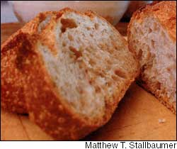
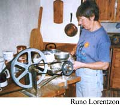
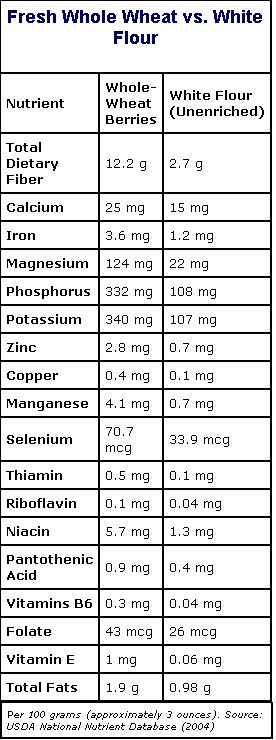

The grain, the whole grain and nothing but the grain...
This article is the first of a two-part series about whole-grain breads. In this piece, we look into the nutritional benefits of grinding fresh, whole grains at home and review the different types of grain mills. In part two, we will discuss how to use a bread machine for quick and easy home baking, and report on how organic growers, millers and bakers are building networks in Maine. Plus, we’ll share some favorite bread recipes.
- Mother
Before we get to the “grist” of this article, we need to debunk a myth about whole-grain foods. Many people think they don’t like them. But that’s old-think from the batik-skirted ’60s when exuberant nutrient lovers overloaded naturally delicious breads, bars and cakes with blackstrap molasses, carob powder, soy this and soy that. Unfortunately, their nutritional intelligence exceeded their ability to persuade people that they could choke down anything, as long as it was densely packed with nutrition. It hasn’t helped that cellophane-wrapped commercial whole-wheat breads are tainted with off-flavors from overprocessed versions of these same healthful additions.
Let’s fast-forward to the 21st century. Today, home miller/bakers can make 100- percent whole-grain breads, pancakes, muffins, pasta, desserts and much more with infinitely better flavor than anything made from ordinary white flour. How?
First, by understanding that freshness is a major factor in optimum flavor. The quality and flavor of commercially produced flour varies from superb to horrid, depending on the source. If you have access to fresh whole meal milled at low temperatures on a solid stone gristmill, you are really in luck. If your natural food co-op or another local source mills its own fresh, cool whole meal, you are an equally lucky baker.
But if you are dipping out of infrequently used barrels, buying undated, unrefrigerated packages, or relying on a totally unknown mail-order source, you may be in trouble. If you are fond of oil-rich grains such as corn, rye or flaxseed, which become rancid with little provocation after they’re ground, locate a source that dates, then refrigerates or freezes the ground product, or consider milling your own flour at home.
In addition to using fresh flour, you need to choose the right kinds of wheat. Each of the many wheats grown in the United States has its own identifiable flavor and baking personality. For best flavor and performance, an optimum wheat should be used for each type of baked goods. Fluffy, light-flavored, American-style breads produced in a quick four-hour process need hard red or hard white spring wheat. Heartier European-type artisan loaves that take much longer to develop benefit from a full-flavored hard red winter wheat and probably some rye. Delicious whole-wheat pasta requires the wheat preferred by the pasta-loving Italians, hard amber durum. Finally, desserts such as cookies, bars and cakes need the lower protein level of soft white or soft red winter wheats.
Also, some “secret” ingredients can coax spectacular flavor and performance from whole-wheat bread - without a lick of white flour. These delicious additions, which help harness the renegade qualities of germ and bran, are familiar and readily available: eggs, dairy products, potatoes, beans or bean flours, ascorbic acid or one of several “dough conditioners.” As a side benefit, most added ingredients also boost the bread’s protein quality to that of beefsteak by “complementing” the amino acid composition of the whole grain.
Sound complicated? It isn’t. Most whole-grain outlets have or can order specific grains - as long as you know which ones to ask for, and you just learned it!
Nobody seems surprised to learn that white bread is so bereft of nutrients that laboratory rats died on a diet of white bread and water. (In 1970, Roger Williams, a biochemist at the University of Texas, fed “enriched” white bread to rats, and within 90 days two-thirds of them were dead, the others sick.)
Yet people are astonished to learn that the whole operation of grinding flour and baking nutrient-rich breads at home can be an easy daily task - about three minutes, on average, for milling and a few minutes more to dump ingredients in the bread machine, if you use one. And home-milled flour does far more than return mouth-watering flavor to everyday food. It also protects against heart disease, stroke, diabetes and cancer, eases constipation, and provides a secure (and nutritious) food source in case of natural or human-made disasters.
But isn’t this extreme? Why can’t you just buy whole wheat flour from the supermarket?
What’s wrong with commercial flour?
If you’re relying on grocery store packaged flour and commercial products - whether white or “whole wheat” - you definitely should switch to milling your own, and here’s why:
When compared to freshly ground whole-wheat flour, white flour is way less nutritious. Even white flour that has been “enriched” still shows significant losses in 15 of 22 nutrients. Under the U.S. government’s mandatory “enrichment” program started in May 1941, certain vitamins and minerals that are deemed potentially deficient in the American diet are added to flour and related products. In fact, white flour contains more of these synthetic nutrients than were present in the original grain. No attempt, however, is made to replace the most important component lost in milling - insoluble fiber. Few people realize that the “whole wheat” used in many commercially packaged products (with the exception of such companies as Bob’s Red Mill, King Arthur Flour and Arrowhead Mills) is processed exactly like white flour. The nutrient-rich, darker-colored bran, germ and endosperm are mechanically separated then recombined into “whole wheat” according to a formula that varies by brand but that rarely mimics Mother Nature’s balance.
How nutritious is this reconstituted “whole-wheat” flour? As with white flour, any whole-wheat nutrients not purposely discarded with the germ and bran often succumb to the long, hot, repetitive milling process, or to chemicals used to artificially “improve” or bleach flour. Significant losses may occur in heat-sensitive B vitamins, vitamin E, enzymes and other healthful components. In fact, commercially produced whole-wheat flour frequently contains only enough bran for a healthful-looking brown tinge, and virtually no germ. That’s why the Food and Drug Administration’s (FDA) 1999 labeling rules specify that claims about health benefits associated with whole grains can appear only on products that contain at least 51 percent whole grains by weight. These health benefits could be plastered all over home-milled flour because it contains the grain, the whole grain and nothing but the grain.
The Benefits of fiber-rich foods
A virtual river of scientific research shows that the more fiber-rich foods we eat, the healthier we get. Usually, though, scientists cannot pinpoint which grain components are doing the good work. Vitamins, minerals, enzymes, antioxidants and other phytochemicals play indisputably vital roles in promoting health and preventing disease. But in order to grasp the profound importance of grains in our diet - and why home milling is so vital nutritionally - we must learn more about fiber.
Fiber, which exists in soluble and insoluble forms, is the structural portion of plants that the human body can digest only partially or not at all. Only plant foods, such as cereal grains, fruits, vegetables, legumes, nuts and seeds, contain fiber.
Insoluble fiber passes through the digestive system basically unchanged (undigested). This type of fiber has long been considered particularly important because it helps eliminate constipation and the many disorders related to it. Examples of foods high in insoluble fiber are the bran of whole grains; vegetables such as broccoli, green beans, Brussels sprouts, turnips, cauliflower, beets and cabbage; seeds and nuts.
Soluble fibers can be partially digested by our systems. These viscous fibers, which are plentiful in foods such as oats, beans, peas, brown rice, barley, citrus fruits and strawberries, are particularly valuable in fighting heart disease by lowering cholesterol levels, moderating blood sugar in diabetics, protecting against certain cancers and a long list of other conditions.
How much fiber do we need? There’s some quibbling among experts about that. The Food and Nutrition Board of the Institute of Medicine recommends total daily intake in grams at 38 and 25, respectively, for men and women 50 years and younger. For the over-50 group, men need 30 grams and women need 21, due to decreased calorie consumption in this age group. Many fiber advocates recommend a minimum of 40 grams a day. Strict vegetarians typically get up to 60 grams per day. Yet most Americans consume only 14 to 15 grams of fiber a day, and low-carb dieters may get even less. But remember, these figures are for total fiber. So, unless you’re eating truly whole-grain bread, pancakes, pasta and cookies, you are almost certainly eating too little of that vital insoluble fiber. Remember, too, that highly processed fragments of food - such as bran cereals or even fiber laxatives - are no substitute for the real thing. They lack the vitamins, minerals, enzymes, phytochemicals, antioxidants and other components that play silent but inevitable roles in the health benefits associated with a diet rich in whole grains, and may even deplete the body’s mineral stores.
Of course, if fiber were the only reason to eat whole grains, you might not need a home grain mill. You could simply buy ground-up trees, add flavoring and sprinkle the result on your sundaes and pizzas. So, let’s look briefly at other health benefits available to home millers:
Minerals. Discarding wheat bran (the outer seed coat) results in significant losses of calcium, iron, magnesium, phosphorous, potassium, zinc, copper, manganese, selenium, and all of the trace minerals located only in the bran. The government’s “enrichment” program adds back only one of these: iron.
Vitamins. Those supplied in significant quantities by cereal grains are thiamin (B1), riboflavin (B2), niacin (B3), pyridoxine (B6), folate, pantothenic acid and vitamin E. These vitamins are concentrated in either the germ or bran of grain, so commercial milling routinely reduces their presence. The progressive decline in our consumption of leafy green vegetables and legumes has exacerbated B-vitamin losses caused by white flour refining.
Enzymes. A kernel of grain contains hundreds or thousands of enzymes, making it difficult to know what they all do, let alone how they interact with other enzymes or micronutrients in the complex chemical laboratory of the human body. If certain enzymes prove to be more heavily concentrated in the germ and bran of grain (as vitamins and minerals are), the discarding of these important grain parts by commercial millers must certainly result in similar losses of enzymes.
Phytochemicals. Scientists have recently focused their microscopes on several categories of compounds that occur naturally in plant foods, and evidence is accumulating that many of them have positive effects on human health. In addition to fiber, phytochemicals include, for example, allyl sulfides in onions, garlic, leeks and chives, isoflavones in soybeans and phenolic acids in tomatoes, citrus fruits, carrots, whole grains and nuts. Again, to get these compounds, you must eat foods whole.
Good Carbs, Bad Carbs
Unfortunately, the current low-carbohydrate diet rage has resulted in the mistaken idea that all carbohydrates are “bad.” Let’s clear up this mistaken-iden-tity problem.
Metabolically, all carbohydrates are chains of sugar that are broken down at different rates during digestion and delivered to the blood as glucose (also called blood sugar). Glucose stimulates the pancreas to release enough insulin to transport the glucose throughout the body for use or storage. When its delivery job is done, insulin recedes and a hunger signal goes out for more food.
The key difference between what are called complex and simple carbohydrates is the rate at which they are digested. Unrefined complex carbohydrates such as whole grains, beans, peas and legumes are considered good carbs because their fiber slows down digestion, thus delivering a slow, steady supply of glucose to the blood. The glycemic index, a system developed to measure this rate, as well as a more complex measurement called glycemic load, can be found at www.glycemicindex.com.
Simple carbohydrates (such as honey, maple syrup, many vegetables, fruits and sugar cane) as well as refined complex carbohydrates (such as white flour, white rice, white pasta and white sugar) digest quickly. They are considered bad carbs because they cause blood sugar levels to surge, which eventually leads to a gnawing sense of hunger and a grab for more bad carbs.
Repeated spiking and plunging of blood glucose, also called reactive hypoglycemia and the sugar roller coaster, is a significant factor in our obesity epidemic because it leads to overeating, an impaired pancreas (called insulin resistance, where insulin production slows) or a debilitated pancreas (type-2 diabetes, where insulin production stops completely).
Low-carbohydrate diets have appealed to millions of people because they provide a simplistic solution to the sugar-roller-coaster problem: Consume no carbohydrates at all, and the sugar roller coaster is derailed. Unfortunately, this approach will also send the nutrient express off the track. Although there is some sense to short-term curtailment of all carbohydrates to purge the system of bad carbs, beyond a few weeks, whole fruits, whole vegetables and whole grains must be a part of any healthful diet or weight-loss plan. Even the Atkins’ Diet Web site admits that now, and The South Beach Diet’s Dr. Agatston emphasizes it.
Making Every Mouthful Count
In our struggle to balance calories and nutrients, we must consciously select foods that give us the best shot at long-term health. Grains are a beautiful creation, full of nourishing elements that are vital to health. They supply energy and satisfy appetite while providing none of the simple sugars, hydrogenated fats and salt that dominate processed foods. Fortunately, home-milled whole grains can restore a daily supply of insoluble fiber and nutrients in wonderfully delicious breads and other foods that can be prepared in advance and frozen for future use, with a very reasonable commitment of time. Good health ultimately depends on eating plenty of the high-nutrient foods that tend to be under-consumed in our modern, hectic world - whole fruits, whole vegetables and, especially, whole grains.
Marleeta F. Basey has been milling flour and making 100-percent whole-wheat bread for more than 25 years. This article is adapted from her book, Flour Power: A Guide to Modern Home Grain Milling (The new, revised edition was released earlier this year.) To order.
Choosing a Grain Mill
Modern countertop grain mills make it easy for anyone to grind fresh, flavorful flours. There are dozens of flour mills from which to choose. Fortunately, the search for an ideal mill can begin with three basic decisions - what power source to use, the appropriate milling mechanism and the maximum flour temperature to tolerate. Many mills are appropriate for family use as well as in a bootstrap business. The decision comes down to price, quality, versatility and convenience features.
Power Source
Manual Mills. For the energetic, athletic, disciplined person, a manual mill (particularly the large flywheel type) can be a superb choice, with a low chance of nutrient-damaging heat buildup. But most manual mills require work, so be realistic - if there’s no flour, there can be no bread.
Electric Mills. If the primary objective is getting the flour ground and the bread on the table without any fuss, frills or fanfare, then an electric mill’s primary drawback - loss of use during power outages - may be acceptably rare. The zippiest, cleanest, easiest mills in this category are relatively inexpensive, and they do one heck of a job, then go back in the cupboard.
Convertible Mills. Many mill manufacturers have devised ways to make their mills convertible from manual to electric or vice versa, so grinding continues with or without power. It is important to select a convertible mill that works properly in either mode because some don’t.
Milling Mechanisms
Each grain mill has some mechanism for crushing, beating or grinding grain into meal, usually in a range of textures from coarse to fine. Some mechanisms are more versatile than others: They grind hard, soft, oily or wet items. Aside from the increasingly popular “oat roller,” two milling mechanisms dominate the home mill market: burr and impact.
Burr mills are the most common. They have two grinding plates, one fixed and the other rotated by a power source. The grain is fed into a gap between the burrs, which are grooved to aid the shearing and crushing of the grain. Composite stone burrs are constructed by pressing natural or artificial stones (and sometimes metal cutting blades) in a bed of cement. Metal burrs/plates, some of which are flat and some cone-shaped, are constructed of hardened cast steel or other metal. Basically, stone burrs tend to crush the grain, and metal burrs tend to break and shear it.
“Impact mills” employ two flat stainless steel heads with concentric rows of “teeth” that spin within each other at high speeds. Grain drops into the mechanism and is hammered, rather than ground, into flour. These very fast, efficient electric-only mills handle most dry, non-oily grains, but can only produce fine, not coarse, flours.
Heat Buildup
Heat is generated when grains are crushed between burrs or slammed around by metal pins. As milling time or speed increase, heat increases, which raises the risk of damage to nutrients and gluten. But when does heat buildup become a problem? Here’s what scientists either suspect or have documented:
112 to 115 degrees. Heat-sensitive vitamins may begin to deteriorate, and the baking quality of gluten could be at risk of deterioration. This would be the upper limit for the super-safe miller.
122 degrees. Some enzymes are destroyed or become inactive, and some deterioration of gluten has been observed. (The baking performance of gluten declines progressively between 122 and 158 degrees with virtually all functionality lost by 167 degrees.)
More than 140 degrees. Losses in bread quality are clearly apparent; enzymes, heat-sensitive vitamins and probably many other healthful components are destroyed.
Kitchen Mill - $170 to $200
Medium-sized electric; impact type; not convertible to manual. Made in USA.
Compact, clean, no-dust flour canister. Mills all dry grains, corn and beans, but not seeds or nuts. It comes with a five-year warranty on the chamber and pan, and a lifetime warranty on parts and workmanship. Widely available on the Internet and has a good track record.
Grain Master Whisper Mill - $200 to $250
Medium-sized electric; impact type; not convertible to manual. Made in USA.
Highest quality, compact, filtered. It comes with a no-dust flour canister and noise-reduction features. Mills all dry grains, corn and beans, but not seeds or nuts. It comes with a lifetime warranty. Widely available in stores and on the Internet.
Nutrimill - $200 to $250 (older version called Ultra Mill - about $150)
Medium-sized electric; impact type; not convertible to manual. Made in USA.
Compact, filtered, no-dust flour canister. Mills all dry grains, popcorn and most beans, but not seeds or nuts. Grain flow and texture control. It comes with a 10-year warranty on the milling heads, a lifetime warranty on the mill. Widely available on the Internet.
Fidibus - $250 to $350 (also sold as Wolfgang - $250 to $400)
Medium-sized electric; burr type; not convertible to manual. Imported from Germany.
Highest quality, industrial motor, solid beechwood casing, stunning good looks. Grinds all dry grains, beans, corn. It comes with a three-year warranty.
Family Grain Mill - $90 to $250
Small electric; burr type; convertible to manual. Imported from Germany.
Grinds small dry grains but corn and beans need precracking before milling; never overheats flour. Mill mechanism and attachments useable with separate manual base that starts at $90. Exceedingly versatile; widely available; very popular. Lifetime warranty for manufacturer defects.
Country Living Grain Mill - less than $400
Large manual; burr type; convertible to electric. Made in USA.
Highest quality, very attractive, work required but large flywheel and optional bar extender reduce grinding effort significantly. Mills all dry items; needs accessory auger for large items. 25-year track record; lifetime warranty, except one year on burrs. Widely available in catalogs and on the Internet.
Diamant (D-525) - about $600
Large manual; burr type; convertible to electric with V-belt pulley. Imported from Denmark.
Highest quality, easiest to operate of all manual mills, considered the “Cadillac” of manual mills since 1920; comes in green and gold. Large flywheel significantly reduces grinding effort and milling time; grinds all dry or wet items, including nuts and nut butters, with a standard auger. Standard, extra-fine and extra- coarse burrs provide versatility; one-year warranty.
Mill-Rite - about $400
Medium-sized electric; burr type; convertible to manual. Made in USA.
A reliable workhorse; heavy-duty motor features gear reduction so flour remains cool, quieter than many mills; exclusive feature disengages motor, so mill works easily manually. Mills all dry grains, corn, beans. Built to last; 10-year-warranty on parts and workmanship.
A Spiritual Practice
I purchased a Nutrimill grain mill in January 2003, and I love it. It can grind 4 cups of wheat into fine flour for bread making in about five minutes.
The mill fits on the kitchen counter, underneath the upper cabinets. It holds 20 cups of grain at a time, and its impact grinding mechanism is self-cleaning. Even though it’s marketed as being the quietest mill there is, it’s still pretty loud.
I buy my organic, high-protein wheat in 50-pound bags from the local Mennonite bulk food store at a very good price, and store it in recycled bakery icing buckets.
The actual bread-making process has become almost a spiritual practice for me, from grinding to kneading to slicing the finished breads. I listen to old-time music on my little kitchen radio, and the day’s problems literally melt away. We rarely eat meat, so we depend on our ‘staff of life’ to provide the protein missing in our diets. I substitute a half cup each of ground flax seed, wheat germ, soy flour and oat bran for 2 cups of the flour in the recipe, so I know the bread is super healthy. Our bread is so much cheaper to make than it would cost to buy a similar multi-grain one, and certainly cheaper than meat! The investment in the Nutrimill is paying off in money saved and improved health.
Sam Jones
Jonesborough, Tennessee
I started grinding my own flour in early 2003 after purchasing a Whisper Mill. I had been baking all of my family’s bread using store-bought whole-wheat flour. I knew that the nutritional quality had deteriorated in the purchased flours I was using.
The Whisper Mill has proven itself to be a great buy. I have ground both hard and soft wheat, buckwheat groats and soybeans. Our everyday bread is oatmeal/whole wheat. This is what I have fed my 4 year old since he started eating bread. It is remarkable how sweet a loaf of bread made with freshly ground wheat tastes. My family continues to encourage my baking by showing their appreciation for my wholesome, homemade goodies with big smiles. And nothing makes me feel more satisfied than watching my 4 year old bite into a big piece of buttered bread that I made myself. I know what he is putting into his mouth - something I would never know with purchased commercially produced bread products.
Lori Fulton
Canonsburg, Pennsylvania
For about 25 years, my sole mill experience has been using a Bosch grain mill.
Although I may use it only a couple of times a month, at one point in time, I was making bread every week and needed to grind the grains. I have never had a moment’s problem with the mill. The set of earplugs is useful in blocking out the high-pitched motor sounds.
It is very satisfying to know I’m maximizing the nutritional value of the grain at mealtimes.
Judy Wahlers
Phoenix, Arizona
We live in Illinois, near St. Louis, and local wheat is not as rich in gluten as the hard, western red wheat. We camp out West regularly and bring back a few bushels of wheat every couple of years. Last time, on the way home after a fishing trip, I stopped at a grain elevator alongside of the railroad in western Colorado. The operator suggested his discharge chute would burst my plastic trash bags in which I had proposed to collect wheat from his elevator, so he directed me to Delmar Eichenberg, a local farmer. We visited Delmar, admired Native American artifacts he had collected, ended up trading fresh trout for a few bushels of his wheat, made a new friend and plan to repeat the visit soon.
I use a Vita-Mix to grind 2 cups at a time, which takes 1½ minutes to turn wheat berries into fresh flour. I sometimes add dried cranberries, walnuts and raisins to the bread. We have five generations of our family here on the farm, and all enjoy it immensely: warm, it’s irresistible; cold, it’s great with jelly, butter or plain; toasting even enhances the flavor. Ingredients are about 12 cents for a pound and a half loaf.
Richard P. Ellerbrake
Lebanon, Illinois
It all started as a general interest in healthful eating. As vegetarians, bread is an important and exciting part of our diet. After our exposure to Zingerman’s bread (Ann Arbor, Mich.), we knew we would never find satisfaction with grocery store bread again. The excellent “chew” and hearty crust in these rustic, old-world and beautiful loaves is incomparable.
Several hundred hum-drum grocery loaves later, we began to put the pieces together:
1) The bread machine we got for Christmas one year,
2) The Laurel’s Kitchen Bread Book that lay dormantly on a shelf,
3) The availability of whole wheat berries just a short drive away at an Amish bulk food store, and
4) The purchase of a hand-crank mill called “Our Very Best Grain Mill.”
Our plan was to make Desem (Day’-zum) bread once a week as outlined in Laurel’s book. Desem is Flemish for “starter”and is a unique way to bring wholesome wheat bread into your life. Desem deserves recognition because the ingredients are so pure and simple: wheat, water and salt. It was glorious and a memorable homesteading experience.
I refer to it as a memory now … because it only lasted about three weeks. Yes, we soon realized this hand-grinding plan was too time consuming. We exchanged the first mill for an electric model, The Grain Master Whisper Mill, with which we’ve been quite happy. It is fairly quiet (like a modest vacuum noise) and clean, but most importantly - it’s fast! It grinds in a few minutes what took 30 by hand.
Somewhere after the Grain Master purchase, our bread machine, which had become stationary on the kitchen countertop, broke down. Kneading the dough by hand was not an option due to the time and mess; after some research we bought a KitchenAid mixer. This machine saved even more time by cutting our kneading time down from 27 minutes in the bread machine to five.
So after quite a journey, we have our tools of choice: KitchenAid mixer and Grain Master Whisper Mill. These work well for our two-loaf-per-week Desem operation. We have not tired of this excellent loaf. Our process continues to evolve as does the quality of the bread, and our health with each week’s baking.
I urge you to reference these books in any article about whole-wheat bread, they have been incredibly helpful: The Laurel’s Kitchen Bread Book: A Guide to Whole-Grain Breadmaking, by Laurel Robertson, Carol Flinders, and Bronwen Godfrey. Also The Bread Builders: Hearth Loaves & Masonry Ovens by Daniel Wing and Alan Scott, 1999.
Jodi Robison
Wooster, Ohio
We have the most basic hand Corona mill. It’s a great little mill that grinds anything - corn, oats, acorns, sunflower seeds, flax. We have used some of the higher-quality, more pricey mills, and they do a better job creating fine flour, but they also plug when grinding oily seeds or soft grains like oats. For a first mill that does everything, we would recommend the Corona. Ours was about $50, it’s five years old, and we have never had a problem.
Chris Knapp
Canaan, Maine
I consider myself a junk food junkie and a health food nut all in one package. With such tendencies for food in these categories, I’m always looking for ways to balance my evil habits with providing healthy food for my family. A couple of years ago, we borrowed a small Corona mill. It ground nicely enough, but we had to pour the berries in at a snail’s pace - not practical for everyday use. We have been using a Diamant grain mill for a year and a half, and I am extremely pleased with it. True, it was a major financial investment - a basic model with all-purpose burrs costs $600. When we first got the mill, I had aspirations of “renting it out” to others to grind their own grain, but our lives have been busy so this never happened. It would be a great idea to own a mill in conjunction with others to offset the cost.
The Diamant is designed to be mounted to a table with four bolts, so it stays out all the time. If you don’t mind a 14-inch-high mill in the kitchen, this is a great model. I love looking at the mill on the counter. Its design is kind of old-fashioned with beautiful lines. I appreciate the fact that something designed for practical everyday use is lovely to look at. It is made of cast iron, so it should still be around for my great-grandchildren.
The Diamant mills easily. The more you tighten the burrs, the finer the flour, and the harder it is to turn. It mills easily, but does it mill fine? Yes! I am not sure if it can grind as fine as King Arthur whole-wheat flour, but I like mine a bit coarser. It also has a large-capacity hopper that can be full and still grind the grain effectively.
Joyce Hillman
Monroe, Maine
|
 Betsy Erickson, a Michigan homesteader, has used a motorized Corona to grind home- grown rye for 20 years. |
 |
 |